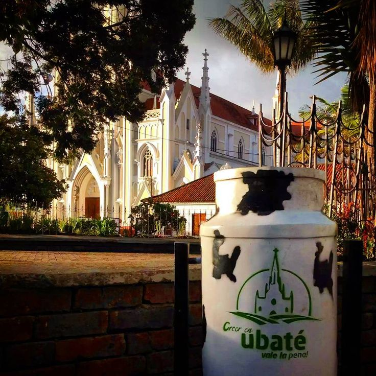
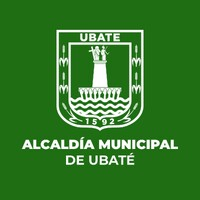
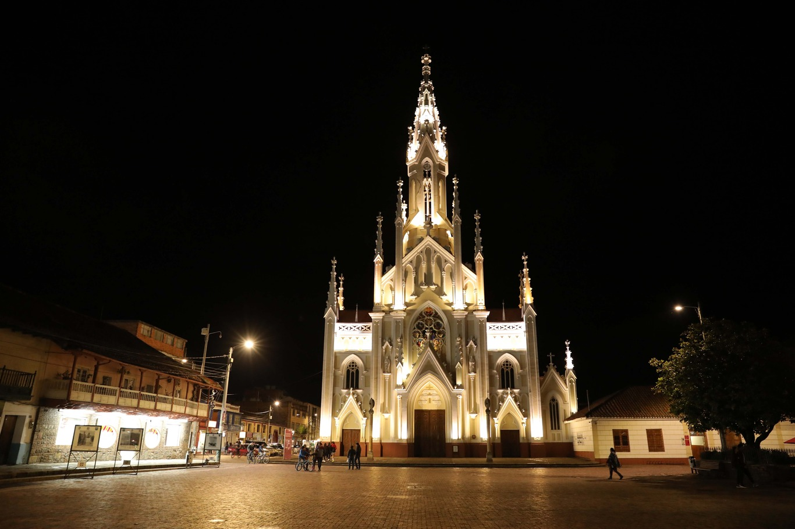
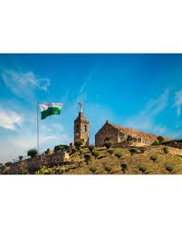
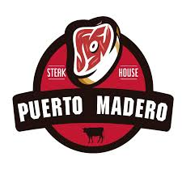
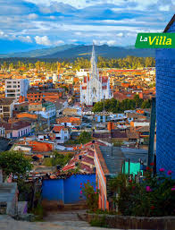

Villa de San Diego de Ubaté

Simbolos
Himno
I
Rico valle de verdes llanuras
fértil tierra que Dios nos brindó
viviremos los años de gloria
siempre en paz con amor y humildad.
II
Madre tierra de grandes figuras
que en su seno las viste crecer
hoy son seres que escalan la gloria
y a su pueblo lo ven florecer.
III
Los labriegos se ganan la vida
desde el alba hasta el atardecer
regresando a su dulce morada
como premio a su duro quehacer.
IV
Nuestro templo reliquia sagrada
admirado por la humanidad
allí guarda un tesoro divino
santo Cristo patrón de bondad.
Bandera
El color verde en la bandera de la Villa de San Diego de Ubaté tiene como significado
la Simbolización de la esperanza como motor regulador del bienestar que garantiza un mejor futuro.
El color Blanco Simboliza el valor absoluto, la unidad y la inocencia,
aplicado a los derechos humanos e integridad como personas,
así como la transparencia en el trabajo de quienes defienden nuestros derechos.
Escudo

El escudo de armas de la Villa de San Diego de Ubaté, le fue concedido en virtud de los méritos patrios y del amor a la libertad. Consta de una columna de plata sobre el campo verde claro,
a sus pies se desborda un río. Forman un pedestal, nueve brazos en acción de sostenerlo y en cada uno de ellos se encuentran los nombres de los pueblos que conforman la provincia de Ubaté.
Sobre la columna se hallan las estatuas que simbolizan la religión y la patria. Se encuentra enmarcado
y haciendo las veces de bordura, las espigas que hacen alusión a la riqueza agrícola de la comarca, en la parte superior el nombre del municipio y en la parte inferior la fecha de fundación.
Sitios Turísticos
-
Embalse El Hato
 El embalse del hato es uno de los sitos ecológicos más importantes de la zona. Allí se pueden realizar actividades como pesca deportiva, camping y deportes acuáticos.
además, ofrece un ambiente tranquilo con aire puro y herosos paisajes naturales
El embalse del hato es uno de los sitos ecológicos más importantes de la zona. Allí se pueden realizar actividades como pesca deportiva, camping y deportes acuáticos.
además, ofrece un ambiente tranquilo con aire puro y herosos paisajes naturales
-
Basílica Del Santo Cristo

Es el principal actractivo turístico del municipio. Esta iglesia tiene un estilo gótico francés, algo poco común
en Colombia. En su interior se encuentra la imagen del Santo Cristo, considerado milagroso, y cada año recibe
muchos peregrinos. Además, su arquitectura, vitrales y detalles en madera la hacen muy llamativa.
-
Capilla De Santa Bárbara

Ubicada en una colina, este sitio es perfecto para quienes disfrutan el senderismo. Desde allí se obtine una vista
panorámica del municipio, y es un lugar muy visitado por su valor religioso y paisajístico.
Restaurantes Más Reconocidos
-
Puerto Madero Steak House Ubaté

Inspirado en las parrillas bonaerenses, ofrece una propuesta culinaria centrada en carnes de res y cerdo cuidadosamente
sellconecionadas, opciones como bife de chorizo, parrilla mixta y chicharrón. Su carta también incluye hambueguesas gourmet, papas chorreadas y acompañamientos típicos.
Las preparaciones al carbón y el uso de ingredientes locales resaltan su sabor auténtico.
El restaurante cambina un entorno campestre con un diseño tippo rancho, ideal para cenas familiares o reuniones sociales.

Es conocido por ofrecer un ambiete acogerdor y un menú de estilo italiano con opciones de pizza, pastas, café, postres artesanales, helados, lasaña, además de una variedad de vinos, carvezas y cócteles.
El menú está diseñado para adaptarse a distintos momentos del día, desde desayunos hasta cenas.
Atrayendo tanto a residentes locales como visitantes de la región.
Bandido Burger Bar ha sido seleccionado en varias ediciones del Burger Master, representando a Ubaté entre los mejores restaurantes del país.
En Tripadvisor mantiene calificaciones sobresalientes (Travellers' Choice), situándose entre el 10% de los establecimientos mejor valorados.
Los clientes destacan la originalidad de sus preparaciones, la calidez del servicio y su estética moderna e "instagrameable".
El local combina un estilo familiar con un ambiente musical y decorativo cuidado. Los comensales resaltan la atención personalizada del
equipo -incluyendo a meseras reconocidas por su amabilidad-, el servicio rápido y la posibilidad de disfrutar con amigos, familia o mascotas.
Es considerado por muchos como el mejor lugar para comer hamburguesas en Ubaté y un atractivo del creciente turismo gastronómico en la región.

Lo que marca la diferencia en Ubaté es la frescura. La leche llega directamente de los hatos del valle a las plantas procesadoras,
garantizando una pureza que se siente en el paladar. Degustar una tajada de queso con un poco de arequipe o melao es, para cualquier visitante, un rito de paso obligatorio.
Mucho más que lácteos: Un festín de sabores
Aunque el sector lechero es el rey, la oferta turística se complementa con dos pilares fundamentales:
La Famosa Gallina y Fritanga: Como ya mencionamos en nuestra ruta de restaurantes, la gallina preparada a la leña y la fritanga ubatense son el complemento perfecto.
Es la "comida de paso" por excelencia que atrae a miles de viajeros cada fin de semana.
Dulces Tradicionales: Los postres de leche, las panelitas y los alfajores locales son el cierre ideal para cualquier visita, convirtiendo al municipio en una parada técnica deliciosa
en la ruta hacia el norte de Cundinamarca y Boyacá.

Cundinamarca se consolida como un territorio lleno de identidad, historia y riqueza cultural que refleja lo mejor de la región andina colombiana.
Sus símbolos representativos, como el escudo, la bandera y el himno, no solo muestran el orgullo de sus habitantes,
sino que también cuentan la historia y los valores que han construido su identidad a lo largo del tiempo.
A esto se suma su variada oferta gastronómica, en la que los restaurantes destacan por rescatar sabores tradicionales
y brindar experiencias únicas a quienes los visitan.
Además, sus múltiples lugares turísticos, que van desde paisajes naturales hasta espacios históricos y culturales,
convierten a Cundinamarca en un destino atractivo para todo tipo de visitantes.
Cada rincón del departamento ofrece algo especial, ya sea tranquilidad, aventura o aprendizaje.
En definitiva, Cundinamarca no solo es un lugar para conocer, sino para disfrutar y valorar,
ya que integra de manera armoniosa su patrimonio, su cultura y su desarrollo,
dejando una impresión significativa en quienes exploran sus tierras.